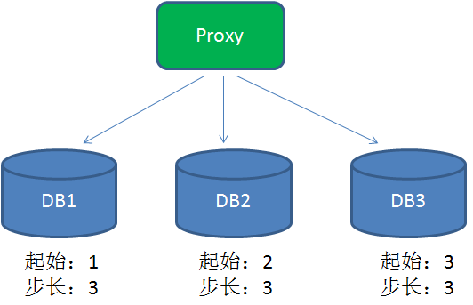
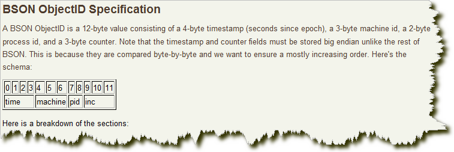
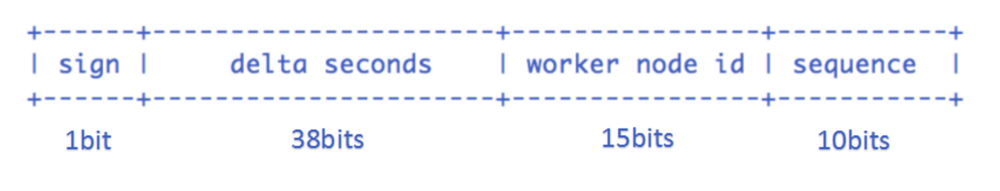

UUID
UUID是通用唯一识别码 (Universally Unique Identifier)，在其他语言中也叫GUID，可以生成一个长度32位的全局唯一识别码。
String uuid = UUID.randomUUID().toString()
结果示例：
046b6c7f-0b8a-43b9-b35d-6489e6daee91
UUID虽然可以保证全局唯一，但是占用32位有些太长，而且是无序的，入库时性能比较差。
为什么会变差呢？
这就涉及到 B+树索引的分裂：
众所周知，关系型数据库的索引大都是B+树的结构，拿ID字段来举例，索引树的每一个节点都存储着若干个ID。
如果我们的ID按递增的顺序来插入，比如陆续插入8，9，10，新的ID都只会插入到最后一个节点当中。当最后一个节点满了，会裂变出新的节点。这样的插入是性能比较高的插入，因为这样节点的分裂次数最少，而且充分利用了每一个节点的空间。
但是，如果我们的插入完全无序，不但会导致一些中间节点产生分裂，也会白白创造出很多不饱和的节点，这样大大降低了数据库插入的性能。
优点：
- 1）简单，代码方便。
- 2）生成ID性能非常好，基本不会有性能问题。
- 3）全球唯一，在遇见数据迁移，系统数据合并，或者数据库变更等情况下，可以从容应对。
缺点：
- 1）没有排序，无法保证趋势递增。
- 2）UUID往往是使用字符串存储，查询的效率比较低。
- 3）存储空间比较大，如果是海量数据库，就需要考虑存储量的问题。
- 4）传输数据量大
- 5）不可读。
数据库自增主键
每一次生成ID的时候，访问数据库，执行下面的语句：
begin;
REPLACE INTO table ( feild ) VALUES ( ‘a’ );
SELECT LAST_INSERT_ID();
commit;
REPLACE INTO 的含义是插入一条记录，如果表中唯一索引的值遇到冲突，则替换老数据。
这样一来，每次都可以得到一个递增的ID。
缺点：
- 1）不同数据库语法和实现不同，数据库迁移的时候或多数据库版本支持的时候需要处理。
- 2）在单个数据库或读写分离或一主多从的情况下，只有一个主库可以生成。有单点故障的风险。
- 3）在性能达不到要求的情况下，比较难于扩展。（不适用于海量高并发）
- 4）如果遇见多个系统需要合并或者涉及到数据迁移会相当痛苦。
- 5）分表分库的时候会有麻烦。
- 6）并非一定连续，类似MySQL，当生成新ID的事务回滚，那么后续的事务也不会再用这个ID了。这个在性能和连续性的折中。如果为了保证连续，必须要在事务结束后才能生成ID，那性能就会出现问题。
- 7）在分布式数据库中，如果采用了自增主键的话，有可能会带来尾部热点。分布式数据库常常使用range的分区方式，在大量新增记录的时候，IO会集中在一个分区上，造成热点数据。
优化方案：
为了提高性能，在分布式系统中可以用DB proxy请求不同的分库，每个分库设置不同的初始值，步长和分库数量相等：

最终三个数据库生成的id为
- DB1：1+步长乘以n
- DB2：2+步长乘以n
- DB3：3+步长乘以n
但是这样ID的生成对数据库严重依赖，影响性能，而且一旦数据库挂掉，服务将变得不可用。
Redis生成ID
当使用数据库来生成ID性能不够要求的时候，我们可以尝试使用Redis来生成ID。这主要依赖于Redis是单线程的，所以也可以用生成全局唯一的ID。可以用Redis的原子操作 INCR和INCRBY来实现。
可以使用Redis集群来获取更高的吞吐量。假如一个集群中有5台Redis。可以初始化每台Redis的值分别是1,2,3,4,5，然后步长都是5。各个Redis生成的ID为：
- A：1,6,11,16,21
- B：2,7,12,17,22
- C：3,8,13,18,23
- D：4,9,14,19,24
- E：5,10,15,20,25
这个，随便负载到哪个机确定好，未来很难做修改。但是3-5台服务器基本能够满足器上，都可以获得不同的ID。但是步长和初始值一定需要事先需要了。使用Redis集群也可以方式单点故障的问题。
另外，比较适合使用Redis来生成每天从0开始的流水号。比如订单号=日期+当日自增长号。可以每天在Redis中生成一个Key，使用INCR进行累加。
优点：
- 1）不依赖于数据库，灵活方便，且性能优于数据库。
- 2）数字ID天然排序，对分页或者需要排序的结果很有帮助。
缺点：
- 1）如果系统中没有Redis，还需要引入新的组件，增加系统复杂度。
- 2）需要编码和配置的工作量比较大。
zookeeper生成唯一ID
zookeeper主要通过其znode数据版本来生成序列号，可以生成32位和64位的数据版本号，客户端可以使用这个版本号来作为唯一的序列号。
很少会使用zookeeper来生成唯一ID。主要是由于需要依赖zookeeper，并且是多步调用API，如果在竞争较大的情况下，需要考虑使用分布式锁。因此，性能在高并发的分布式环境下，也不甚理想。
MongoDB的ObjectId
MongoDB的ObjectId和snowflake算法类似。它设计成轻量型的，不同的机器都能用全局唯一的同种方法方便地生成它。MongoDB 从一开始就设计用来作为分布式数据库，处理多个节点是一个核心要求。使其在分片环境中要容易生成得多。
其格式如下：

前4 个字节是从标准纪元开始的时间戳，单位为秒。时间戳，与随后的5 个字节组合起来，提供了秒级别的唯一性。由于时间戳在前，这意味着ObjectId 大致会按照插入的顺序排列。这对于某些方面很有用，如将其作为索引提高效率。这4 个字节也隐含了文档创建的时间。绝大多数客户端类库都会公开一个方法从ObjectId 获取这个信息。
接下来的3 字节是所在主机的唯一标识符。通常是机器主机名的散列值。这样就可以确保不同主机生成不同的ObjectId，不产生冲突。
为了确保在同一台机器上并发的多个进程产生的ObjectId 是唯一的，接下来的两字节来自产生ObjectId 的进程标识符（PID）。
前9 字节保证了同一秒钟不同机器不同进程产生的ObjectId 是唯一的。后3 字节就是一个自动增加的计数器，确保相同进程同一秒产生的ObjectId 也是不一样的。同一秒钟最多允许每个进程拥有2563（16 777 216）个不同的ObjectId。
实现的源码可以到MongoDB官方网站下载。
SnowFlake（雪花算法）
snowflake是Twitter开源的分布式ID生成算法，结果是一个long型的ID。其核心思想是：使用41bit作为毫秒数，10bit作为机器的ID（5个bit是数据中心，5个bit的机器ID），12bit作为毫秒内的流水号（意味着每个节点在每毫秒可以产生 4096 个 ID），最后还有一个符号位，永远是0。
实现的代码可以参看https://github.com/twitter/snowflake
该算法实现基本就是二进制操作，如果二进制不熟悉的可以看看我之前写的相关文章：java二进制相关基础、二进制实战技巧。
这个算法单机每秒内理论上最多可以生成1000*(2^12)，也就是409.6万个ID，（吼吼，这个得了的快啊）。

SnowFlake所生成的ID一共分成四部分：
1.第一位
占用1bit，其值始终是0，没有实际作用。
2.时间戳
占用41bit，精确到毫秒，总共可以容纳约140年的时间。
3.工作机器id
占用10bit，其中高位5bit是数据中心ID（datacenterId），低位5bit是工作节点ID（workerId），做多可以容纳1024个节点。
4.序列号
占用12bit，这个值在同一毫秒同一节点上从0开始不断累加，最多可以累加到4095。
SnowFlake算法在同一毫秒内最多可以生成多少个全局唯一ID呢？只需要做一个简单的乘法：
同一毫秒的ID数量 = 1024 X 4096 = 4194304
这个数字在绝大多数并发场景下都是够用的。
为了达到业务的幂等，必须要有这样一个id存在，需要满足下面几个条件：
- 同一业务场景要全局唯一。
- 该id必须是在消息的发送方进行产生发送到MQ。
- 消费端根据该id进行判断是否重复，确保幂等。
在那里产生，和消费端进行判断等和这个id没有关系，这个id的要求就是局部唯一或者全局唯一即可，由于这个id是唯一的，可以用来当数据库的主键，既然要做主键那么之前刚刚好发过一篇文章：从开发者角度谈Mysql（1）：主键问题，文章重点提到为什么需要自增、或者趋势自增的好处。（和Mysql数据存储做法有关）。
那么该id需要有2个特性：
- 局部、全局唯一。
- 趋势递增。
java实现代码基本上就是类似这样的（都差不多，基本就是二进制位操作）：
1 | /** |
优点：
- 快（哈哈，天下武功唯快不破）。
- 没有啥依赖，实现也特别简单。
- 知道原理之后可以根据实际情况调整各各位段，方便灵活。
缺点：
- 只能趋势递增。（有些也不叫缺点，网上有些如果绝对递增，竞争对手中午下单，第二天在下单即可大概判断该公司的订单量，危险！！！）
- 依赖机器时间，如果发生回拨会导致可能生成id重复。
下面重点讨论时间回拨问题。
snowflake算法时间回拨问题思考
由于存在时间回拨问题，但是他又是那么快和简单，我们思考下是否可以解决呢？ 零度在网上找了一圈没有发现具体的解决方案，但是找到了一篇美团不错的文章：Leaf——美团点评分布式ID生成系统（https://tech.meituan.com/MT_Leaf.html）
文章很不错，可惜并没有提到时间回拨如何具体解决。
分析时间回拨产生原因
第一：人为操作，在真实环境一般不会有那个傻逼干这种事情，所以基本可以排除。
第二：由于有些业务等需要，机器需要同步时间服务器（在这个过程中可能会存在时间回拨）。
解决方法
- 由于是分布在各各机器自己上面，如果要几台集中的机器（并且不做时间同步），那么就基本上就不存在回拨可能性了（曲线救国也是救国，哈哈），但是也的确带来了新问题，各各结点需要访问集中机器，要保证性能，百度的uid-generator产生就是基于这种情况做的（每次取一批回来，很好的思想，性能也非常不错）https://github.com/baidu/uid-generator。
时间问题回拨的解决方法：
- 当回拨时间小于15ms，就等时间追上来之后继续生成。
- 当时间大于15ms时间我们通过更换workid来产生之前都没有产生过的来解决回拨问题。
首先把workid的位数进行了调整（15位可以达到3万多了，一般够用了）

Snowflake算法稍微调整下位段：
- sign(1bit)
固定1bit符号标识，即生成的畅途分布式唯一id为正数。 - delta seconds (38 bits)
当前时间，相对于时间基点”2017-12-21”的增量值，单位：毫秒，最多可支持约8.716年 - worker id (15 bits)
机器id，最多可支持约3.28万个节点。 - sequence (10 bits)
每秒下的并发序列，10 bits，这个算法单机每秒内理论上最多可以生成1000(2^10)，也就是*100W的ID，完全能满足业务的需求。
由于服务无状态化关系，所以一般workid也并不配置在具体配置文件里面，这里我们选择redis来进行中央存储（zk、db）都是一样的，只要是集中式的就可以。
实现方式
现在我把3万多个workid放到一个队列中（基于redis），由于需要一个集中的地方来管理workId，每当节点启动时候，（先在本地某个地方看看是否有 借鉴弱依赖zk 本地先保存），如果有那么值就作为workid，如果不存在，就在队列中取一个当workid来使用（队列取走了就没了 ），当发现时间回拨太多的时候，我们就再去队列取一个来当新的workid使用，把刚刚那个使用回拨的情况的workid存到队列里面（队列我们每次都是从头取，从尾部进行插入，这样避免刚刚a机器使用又被b机器获取的可能性）。
有几个问题值得思考：
- 如果引入了redis为啥不用redis下发id？（查看分布式系统唯一ID生成方案汇总会获得答案，我们这里仅仅是用来一致性队列的，能做一致性队列的基本都可以)。
- 引入redis就意味着引入其他第三方的架构，做基础框架最好是不要引用（越简单越好，目前还在学习提高）。
- redis一致性怎么保证？（redis挂了怎么办，怎么同步，的确值得商榷。可能会引入会引入很多新的小问题）。
总结
所以选择类似百度的那种做法比较好，集中之后批取，零度的思考虽然思考了，但是从基础组件来看并不是特别合适，但是也算一种思路吧。

...
...
Copyright 2021 sunfy.top ALL Rights Reserved